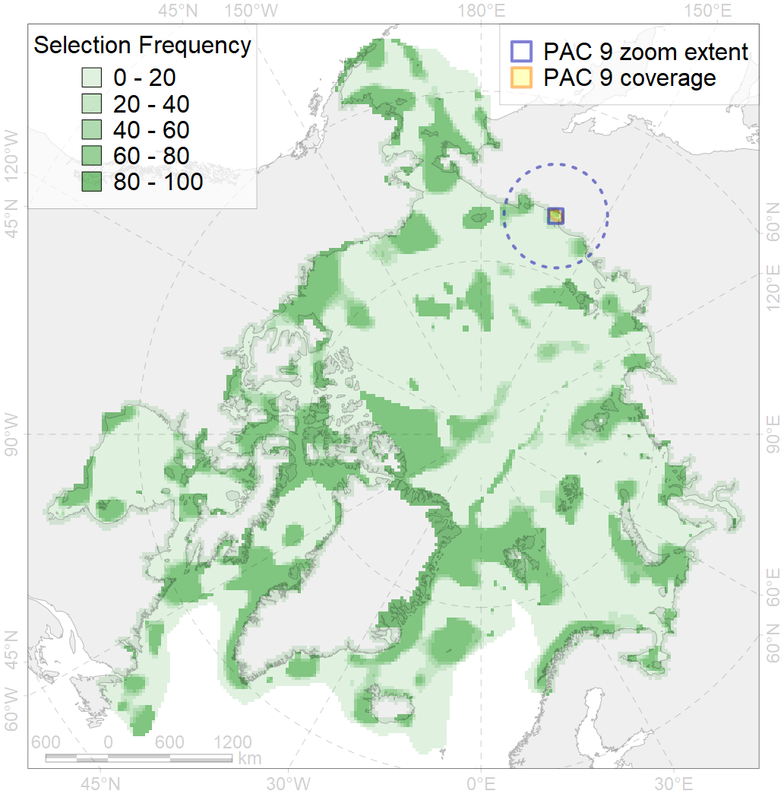
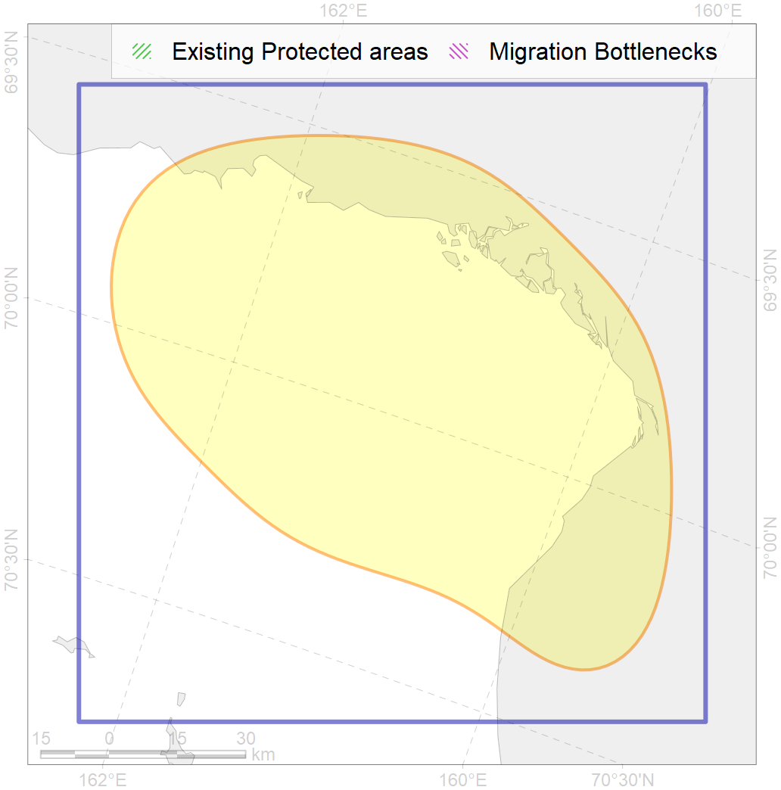

9
For more information regarding this PAC and to conduct custom spatial analysis using the PAC data or any spatial query, please consult Accenter.

0
CFs entirely within the PAC area
2
CFs at least 25% within the PAC area
0
CFs with their target entirely achieved in the PAC
1
CFs with at least 50% of their target achieved in the PAC
| CF ID | CF Name | Proportion in the PAC | Conservation Target | Contribution to ArcNet Target Achievement | PAC’s Contribution to the Achieved Target |
|---|---|---|---|---|---|
| 8019 | Biological communities, estuaries, East-Siberian Sea | 48.1% | 50.0% | 90.9% | 72.2% |
| 7012 | Benthic communities, Kolyma and Chaun Zoogeographic refugia (Boreal North Pacific fauna enclaves) | 32.4% | 49.9% | 39.0% | 30.8% |
| 8035 | Biological communities, salt marshes, East-Siberian Sea | 12.6% | 30.0% | 14.1% | 13.3% |
| 7103 | Benthic communities, II.1.1.12. East-Siberian Sea shelf coastal domain | 9.4% | 12.8% | 44.5% | 23.3% |
| 4092 | Brackish water fish complex, Indigirka-Kolyma rivers esuaries | 1.7% | 6.0% | 16.4% | 5.4% |